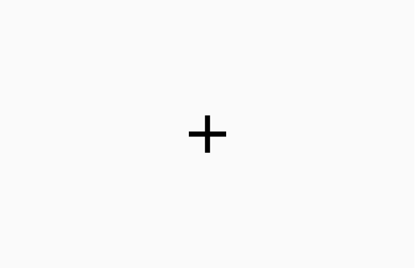
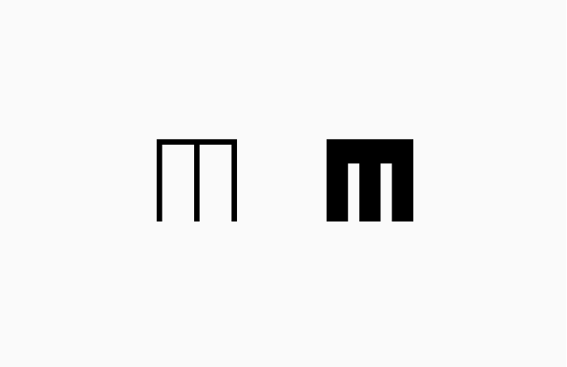
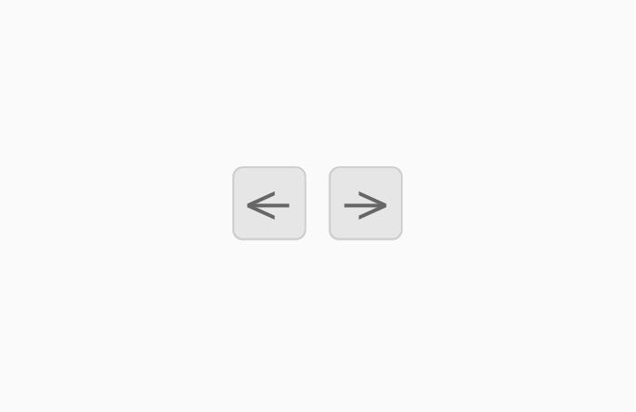

<!DOCTYPE html>
<html lang="es">
    <head>
        <meta charset="UTF-8">
        <meta http-equiv="X-UA-Compatible" content="IE=edge">
        <meta name="viewport" content="width=device-width, initial-scale=1.0">
        <title>Percepción de Variables Tipográficas</title>
        <script src="jspsych/dist/jspsych.js"></script>
        <script src="jspsych/dist/plugin-html-keyboard-response.js"></script>
        <script src="jspsych/dist/plugin-instructions.js"></script>
        <script src="jspsych/dist/plugin-html-button-response.js"></script>
        <script src="jspsych/dist/plugin-survey-multi-choice.js"></script>
        <script src="jspsych/dist/plugin-survey-text.js"></script>
        <script src="jspsych/dist/plugin-sketchpad.js"></script>
        <script src="js/data_practica.js"></script>
        <script src="js/glyphLists.js"></script>

        <link rel="stylesheet" href="jspsych/dist/jspsych.css">
        <link rel="stylesheet" href="css/customStyles.css">
    </head>
    <body></body>
    <script>

        const jsPsych = initJsPsych();
        const timeline = [];

        /* ----------------------------------------------------------------------- */
        /*                                VARIABLES                                */
        /* ----------------------------------------------------------------------- */

        var variableSeleccionada;
        var bloqueActual;
        var imgSrc;
        var estimuloModelo;
        var incremento;
        var atributo;
        var cssConstante;
        var variacionFuente;
        let contadorC = 0;
        var signoInicial;
        var signoInverso;
        var letraRespuesta;
        var ultimaRespuesta;
        var contadorEnsayos = 0;
        var contadorSeries = 0;
        var ubicacionesEstimulos = {};
        var respuestaIngresada;
        var respuestasStaircase = [];
        var reversals = [];
        var listaVariaciones = [];
        var nuevaPractica = false;
        var variable;
        var puntoSerie;
        var reversalFound;
        var respuestasParaReversals = [];
        var forzarFin = false;
        var stimulusOne; 
        var stimulusTwo;


        
        /* ----------------------------------------------------------------------- */
        /*                                FUNCIONES                                */
        /* ----------------------------------------------------------------------- */

        
        // Añade aleatoriamente la clase Modelo o Comparación a los dos divs que contienen los estímulos
        const claseEstimulo = function () {
            var tiposEstimulo = ["modelo", "comparacion"]
            
            const stimuliContainers = document.querySelectorAll(".stimulus");

            for (let i = 0; i < stimuliContainers.length; i++) {
                stimuliContainers[i].classList.add(tiposEstimulo.splice( Math.floor(Math.random()*tiposEstimulo.length), 1 )[0]);
            }
        }

        // Verifica de qué lado queda cada tipo de estímulo
        const obtenerUbicaciones = function() {
            const container = document.querySelectorAll(".stimulus");

            for(let i = 0; i < container.length; i++) {
                var tipoEstimulo = container[i].className.split(' ').pop();
                var ubicacionEstimulo = container[i].className.split(' ')[1];
                ubicacionesEstimulos[tipoEstimulo] = ubicacionEstimulo;
            }
        }

        // Evaluar la respuesta para decidir si se corre un nuevo ensayo
        const evaluarRespuesta = function() {
            switch(jsPsych.data.getLastTrialData().values()[0].response) {
                case 0:
                    respuestaIngresada = 'izquierda';
                    break;
                case 1:
                    respuestaIngresada = 'igual';
                    break;
                case 2:
                    respuestaIngresada = 'derecha';
            }
        }

        // Nos dice qué botón clicó el participante
        const evaluarRespuestaStaircase = function() {
            switch(jsPsych.data.getLastTrialData().values()[0].response) {
                case 0:
                    respuestaIngresada = 'izquierda';
                    break;
                case 1:
                    respuestaIngresada = 'derecha';
            }
        }

        const respuestas_a_Letras = function() {
    
            switch(respuestaIngresada){
                case(ubicacionesEstimulos['modelo']):
                    letraRespuesta = 'M';
                    respuestasStaircase.push(letraRespuesta);
                    break;

                case(ubicacionesEstimulos['comparacion']):
                    letraRespuesta = 'C';
                    respuestasStaircase.push(letraRespuesta);
            }

        }

        const ajustarVariacion = function(){
            if ( ultimaRespuesta === signoInicial ) {
                variacionFuente+=incremento;
            } else if ( ultimaRespuesta == signoInverso ) {
                if ( ultimaRespuesta !== respuestasStaircase.at(-2) ) {
                    variacionFuente+=0;
                } else if ( ultimaRespuesta == respuestasStaircase.at(-2) ) {
                    variacionFuente-=incremento;
                } 
            }
        }

        const ajustarVariacionBis = function(){
            switch(ultimaRespuesta){
                case('M'):
                    let respuestaAnterior = jsPsych.data.get().filter( {id: 'respuesta'} ).last(2).select('responseSign')['values'][0];
                    variacionFuente+=incremento;
                    if(respuestaAnterior==='C'){
                        contadorC=0;
                    }
                    break;
                case('C'):
                    contadorC++;
                    if(contadorC===2){
                        variacionFuente-=incremento;
                        contadorC = 0;
                    } else {
                        variacionFuente+=0;
                    }
                    break;
            }
        }

        const listaReversals = function() {
            if ( ultimaRespuesta === signoInicial ) {
                // si es M tiene que sumar incremento, pero si es C debería restar incremento
                
                if ( ultimaRespuesta === respuestasStaircase.at(-2) ) {
                    respuestasParaReversals.push(ultimaRespuesta);
                } else if ( ultimaRespuesta !== respuestasStaircase.at(-2) && respuestasStaircase.at(-2) !== undefined ) {
                    respuestasParaReversals.push(ultimaRespuesta);
                    checkReversal();
                }
                
            } else if ( ultimaRespuesta == signoInverso ) {
                if ( ultimaRespuesta == respuestasStaircase.at(-2) ) {
                    respuestasStaircase.splice(-1, 1, ultimaRespuesta + "'");
                    respuestasParaReversals.push(ultimaRespuesta);
                    checkReversal();
                }
            }
        }

        const listaThreeReversals = function() {
            if ( ultimaRespuesta === signoInicial ) {
                // si es M tiene que sumar incremento, pero si es C debería restar incremento
                
                if ( ultimaRespuesta === respuestasStaircase.at(-2) && ultimaRespuesta === respuestasStaircase.at(-3) && respuestasStaircase.at(-3) !== undefined ) {
                    respuestasParaReversals.push(ultimaRespuesta);
                } else if ( ultimaRespuesta !== respuestasStaircase.at(-2) && ultimaRespuesta !== respuestasStaircase.at(-3) && respuestasStaircase.at(-2) !== undefined ) {
                    respuestasParaReversals.push(ultimaRespuesta);
                    checkReversal();
                }
                
            } else if ( ultimaRespuesta == signoInverso ) {
                if ( ultimaRespuesta == respuestasStaircase.at(-2) ) {
                    respuestasStaircase.splice(-1, 1, ultimaRespuesta + "'");
                    respuestasParaReversals.push(ultimaRespuesta);
                    checkReversal();
                }
            }
        }

        const checkReversal = function(){
            if ( respuestasParaReversals.at(-1) !== respuestasParaReversals.at(-2) && respuestasParaReversals.at(-2) !== undefined ) {
                reversals.push(respuestasParaReversals.at(-1));
                reversalFound = true;
            }
        }

        const cambioStepSize = function() {
            if (reversalFound === true){
                if (reversals.length <= 3) {
                    incremento = staircaseData.at(puntoSerie)[variable]['step_max'];
                } else if (reversals.length >= 4 && reversals.length <= 7 ) {
                    incremento = staircaseData.at(puntoSerie)[variable]['step_med'];
                } else if (reversals.length >= 8 ) {
                    incremento = staircaseData.at(puntoSerie)[variable]['step_min'];
                }
            }
        }

        const setSignoInverso = function() {
            if ( signoInicial == 'M' ) {
                signoInverso = 'C';
            } else if ( signoInicial == 'C' ) {
                signoInverso == 'M';
            }
        }

        // Reordena un array de una lista
        const reordenarLista = function(list, array) {
            return list[0][array]
                .map(value => ({ value, sort: Math.random() }))
                .sort((a, b) => a.sort - b.sort)
                .map(({ value }) => value);
        }

        // Selecciona los glifos de las variables Ancho e Inclinacion que se usarán como estímulos
        var variableStimuli = function(){
            let i;
            if (variableSeleccionada=='ancho'){
                i = 1;
            } else if (variableSeleccionada=='inclinacion'){
                i = 2;
            }
            let groups = jsPsych.data.get().filter( {id: 'SERIE'} ).last()['trials'][0]['puntoFuncion'];
            let listaReordenadaA = reordenarLista(glyphLists,glyphLists[i][groups][0]);
            let listaReordenadaB = reordenarLista(glyphLists,glyphLists[i][groups][1]);

            let stimuli = [];
            let finalStimuli = [];

            stimuli.push(listaReordenadaA[0]);
            stimuli.push(listaReordenadaB[0]);

            let random = Math.floor(Math.random() * 2);
            let stimulusOne = stimuli[random];
            stimuli.splice(random,1);
            finalStimuli.push(stimulusOne);

            let stimulusTwo = stimuli[0];
            finalStimuli.push(stimulusTwo);

            return finalStimuli;
        }

        function getRandomArbitrary(min, max) {
            return Math.floor(Math.random() * (max - min) + min);
        }


        /* -------------------------------------------------------------------------- */
        /*                                  PANTALLAS                                 */
        /* -------------------------------------------------------------------------- */
        
        var pantallaInicial = {
            type: jsPsychHtmlKeyboardResponse,
            stimulus: '<span style="font-size:40px;">Prueba de percepción de variables tipográficas</span>',
            choices: ['p','a','i'],
            on_finish: function(data){

                let variable = event.key;

                switch(variable) {
                    case('p'):
                    case('P'):
                        variableSeleccionada = "peso";
                        break;
                    case('a'):
                    case('A'):
                        variableSeleccionada = "ancho";
                        break;
                    case('i'):
                    case('I'):
                        variableSeleccionada = "inclinacion";
                }

                imgSrc = 'tut-' + variableSeleccionada + '.png';
                atributo = dataExp[variableSeleccionada]['atributocss'];
            
            }
        }
        timeline.push(pantallaInicial);
        
        var edad = {
            type: jsPsychSurveyText,
            questions: [
                {prompt: 'Ingresa tu edad', name: 'edad', required: true}
            ],
            button_label: 'Siguiente',
            on_load: function(data){
                numPad = document.getElementById('jspsych-survey-text-0');
                htmlString = '<div class="numpad-wrapper"><div class="numpad"><div class="numpad--buttons nums">1</div><div class="numpad--buttons nums">2</div><div class="numpad--buttons nums">3</div><div class="numpad--buttons nums">4</div><div class="numpad--buttons nums">5</div><div class="numpad--buttons nums">6</div><div class="numpad--buttons nums">7</div><div class="numpad--buttons nums">8</div><div class="numpad--buttons nums">9</div><div class="numpad--buttons notnums del">Borrar</div><div class="numpad--buttons nums">0</div><div class="numpad--buttons notnums ok">OK</div></div></div>'
                numPad.insertAdjacentHTML('beforeend', htmlString);

                const numpad = document.querySelector(".numpad-wrapper");
                const numpadClasses = numpad.classList;
                const inputNum = document.querySelector("#input-0");
                var currentTxt = inputNum.textContent;

                inputNum.addEventListener('click', () => {
                    const toggle = numpadClasses.toggle("show", true);
                })

                const numpadNumBtns = document.querySelectorAll('.nums');

                numpadNumBtns.forEach(x => {
                    x.addEventListener('click', function handleClick(event) {
                        let clickedNum = this.textContent;
                        currentTxt = currentTxt.concat(clickedNum);
                        inputNum.value = currentTxt;
                    });
                });

                const deleteNum = document.querySelector(".del");

                deleteNum.addEventListener('click', () => {
                    currentTxt = currentTxt.slice(0, -1);
                    inputNum.value = currentTxt;
                })

                const cerrar = document.querySelector(".ok");

                cerrar.addEventListener('click', () => {
                    const toggle = numpadClasses.toggle("show", false);
                })
            }
        }
        //timeline.push(edad);

        var estudios = {
            type: jsPsychSurveyMultiChoice,
            questions: [
                {
                prompt: "Último nivel de estudios (completado o en curso)", 
                name: 'escolaridad', 
                options: ['Licenciatura', 'Maestría', 'Doctorado']
                }
            ],
            button_label: 'Siguiente',
        }
        //timeline.push(estudios);
        
        var tipo = {
            type: jsPsychSurveyMultiChoice,
            questions: [
                {
                prompt: "¿A qué sector de la comunidad UAM perteneces?", 
                name: 'ocupacion', 
                options: ['Alumnado', 'Docentes', 'Personal administrativo']
                }
            ],
            button_label: 'Siguiente',
        }
        //timeline.push(tipo);
        
        var pruebaLectura = {
            type: jsPsychInstructions,
            pages: [
                '<p style="font-size:24px;">Lea en voz alta el siguiente texto:</p><br><br>' +
                '<p style="font-size: 16px; line-height:1.75; width:600px; text-align: left;">Un pajarito advirtió que la puertecita de su jaula había quedado abierta. Al principio pensó en aprovechar para escapar volando, pero después cambió de opinión temiendo perder su libertad, si, durante su ausencia, volvía a cerrarse la puerta. <br><p style="font-size: 15px; line-height:1.75; width:600px; text-align: right">&mdash;Italo Svevo</p><br><br>'
            ],
            show_clickable_nav: true,
            button_label_previous: 'Regresar',
            button_label_next: 'Siguiente'
        }
        timeline.push(pruebaLectura);

        var instrucciones = {
            type: jsPsychInstructions,
            pages: function(){
                list = ['<p style="font-size:40px">Presentación</p>' +
                    '<p>Veamos primero en qué consiste la prueba</p>',
                    'Aparecerá una cruz al centro de la pantalla, deberás fijar tu atención en ella' +
                    '<br><br>' + 
                    '</img><br>',
                    'Después verás un par de signos durante un lapso muy breve' +
                    '<br><br>' + 
                    '</img><br>',
                    'Por último contestarás una pregunta, dando clic en una de las dos opciones' +
                    '<br><br>' + 
                    '</img><br>',
                    '<p style="font-size:40px">La variable tipográfica que estudiaremos es </p>' + 
                    '<p style="font-size:40px;font-weight:bold;color:#ff7bac;">' + dataExp[variableSeleccionada]['pregunta'].toUpperCase() + '</p>',
                    '</img><br><br>',
                    '<p style="font-size:24px">Hagamos una ronda de práctica, para familiarizarnos con la prueba</p>'
                ]
                return list;
                }, 
            button_label_next: "Siguiente",
            button_label_previous: "Anterior",
            show_clickable_nav: true
        }
        timeline.push(instrucciones);

        var inicioSerie = {
            type: jsPsychSketchpad,
            canvas_width: 0,
            canvas_height: 0,
            show_finished_button: false,
            show_clear_button: false,
            show_undo_button: false,
            data: {
                id: 'SERIE'
            },
            trial_duration: 5000,
            show_countdown_trial_duration: true,
            countdown_timer_html: '<p style="font-size:40px">Siguiente serie comienza en <br/><br/> <span id="sketchpad-timer" style="color:green;"></span></p>',
            on_finish: function(data) {
                contadorSeries++;
            }
        }

        var cruzFijacion = {
            type: jsPsychHtmlKeyboardResponse,
            stimulus: '<span style="font-size:40px;">+</span>',
            choices: 'NO_KEYS',
            trial_duration: 1500,
            data: {
                id: 'fijacion' 
            },
            on_load: function(data) {
                const page = document.querySelector(".jspsych-content-wrapper");
                var escapePresent = false;
                if (page.querySelector('.escape-btn') !== null) {
                    escapePresent = true;
                }
                if (escapePresent == true) {
                    let child = page.querySelector('.escape-btn');
                    page.removeChild(child);
                    escapePresent = false;
                } 
            }
        }

        var estimulosPractica = {
            type: jsPsychHtmlKeyboardResponse,
            stimulus: function(){
                let listaReordenada = reordenarLista(glyphLists,'completeSet');

                let stimulusOne = listaReordenada[0];
                let stimulusTwo = listaReordenada[1];

                return '<div class="stimulus izquierda inline">' + stimulusOne + '</div><div class="spacerAngle inline"></div><div class="stimulus derecha inline">' + stimulusTwo + '</div>';
            },
            options: 'NO_KEYS',
            trial_duration: 1000,
            on_load: function(){
                claseEstimulo();
                let modelo = document.querySelector('.modelo');
                let comparacion = document.querySelector('.comparacion');
                let css = dataExp[variableSeleccionada]['string'];
                
                switch(variableSeleccionada){
                    case('peso'):
                        let weightOne = getRandomArbitrary(40,60);
                        let weightTwo = getRandomArbitrary(120,150);

                        modelo.style.cssText = "font-variation-settings:'" + atributo + "'" + weightOne  + ',' + css;
                        
                        comparacion.style.cssText = "font-variation-settings:'" + atributo + "'" + weightTwo  + ',' + css;
                        break;

                    case('ancho'):
                        let widthOne = getRandomArbitrary(590,610); 
                        let widthTwo = getRandomArbitrary(750,850);
                        modelo.style.cssText = "font-variation-settings:'" + atributo + "'" + widthOne  + ',' + css;
                        
                        comparacion.style.cssText = "font-variation-settings:'" + atributo + "'" + widthTwo  + ',' + css;
                        break;

                    case('inclinacion'):
                        let slantOne = getRandomArbitrary(2,6); 
                        let slantTwo = getRandomArbitrary(20,25);
                        modelo.style.cssText = "font-variation-settings:'" + atributo + "'" + slantOne  + ',' + css;
                        
                        comparacion.style.cssText = "font-variation-settings:'" + atributo + "'" + slantTwo  + ',' + css;
                        break;
                }


                obtenerUbicaciones();
            }
        }

        var respuestasPractica = {
            type: jsPsychHtmlButtonResponse,
            stimulus: function(){
                return '<p style="font-size: 24px;">¿Cuál tenía mayor ' + dataExp[variableSeleccionada]['pregunta'] + '?</p>';
            },
            choices: ['<','=','>'],
            css_classes: ['pregunta', 'hidebtn'],
            data: {
                correct_response: function(){
                    return ubicacionesEstimulos['comparacion'];
                },
                seccion: 'practica'
            },
            on_finish: function(data){
                evaluarRespuesta();
                var acc = false;
                if (data.correct_response == respuestaIngresada) {
                    acc = true;
                }
                data.acierto = acc;
            }
        }

        var feedback = {
            type: jsPsychHtmlKeyboardResponse,
            stimulus: function() {
                var feedback_text = '<span style="color:red;font-size:40px;">Ups, casi <br/><br/> >_< </span>';
                var last_resp_acc = jsPsych.data.getLastTrialData().values()[0].acierto;
                if (last_resp_acc == true) {
                    feedback_text = '<span style="color:green;font-size:40px;">Correcto <br/><br/> n_n</span>';
                }
                return feedback_text;
            },
            options: 'NO_KEYS',
            trial_duration: 2000
        }


        var estimulosStaircase = {
            type: jsPsychHtmlKeyboardResponse,
            stimulus: '<div class="stimulus izquierda inline">M</div><div class="spacerAngle inline"></div><div class="stimulus derecha inline">M</div>',
            stimulus: function(){
                let stimuli = variableStimuli();;

                switch(variableSeleccionada){
                    case('peso'):
                        let listaReordenada = reordenarLista(glyphLists,'completeSet');
                        stimulusOne = listaReordenada[0];
                        stimulusTwo = listaReordenada[1];
                    break;
                    case('ancho'):
                        stimulusOne = stimuli[0];
                        stimulusTwo = stimuli[1];
                    break;
                    case('inclinacion'):
                        stimulusOne = stimuli[0];
                        stimulusTwo = stimuli[1];
                    }
                
                return '<div class="stimulus izquierda inline">' + stimulusOne + '</div><div class="spacerAngle inline"></div><div class="stimulus derecha inline">' + stimulusTwo + '</div>';
            },
            options: 'NO_KEYS',
            trial_duration: 2000,
            data: {
                id: 'estimulos' 
            },
            on_load: function(){
                contadorEnsayos++;
                claseEstimulo();

                //seleccionar contenedor con clase .modelo y modificar peso de fuente
                const modelo = document.querySelector(".modelo");

                let atributo = jsPsych.data.get().filter( {id: 'BLOQUE'} ).last()['trials'][0]['atributoCss'];
                variable = jsPsych.data.get().filter( {id: 'BLOQUE'} ).last()['trials'][0]['variableBloque'];
                puntoSerie = jsPsych.data.get().filter( {id: 'SERIE'} ).last()['trials'][0]['puntoFuncionIndex'];
                
                let estimuloModelo = staircaseData.at(puntoSerie)[variable]['standard'];
                let cssConstante = dataExp[variableSeleccionada]['string'];
                

                modelo.style.cssText = "font-variation-settings:'" + atributo + "'" + estimuloModelo  + ',' + cssConstante;
                
                //seleccionar contenedor con clase .comparacion y modificar peso de fuente, de acuerdo con la dirección de la serie
                const comparacion = document.querySelector(".comparacion");

                
                if ( contadorEnsayos == 1 ) {
                    variacionFuente = staircaseData.at(puntoSerie)[variable]['start'];
                    incremento = staircaseData.at(puntoSerie)[variable]['step_max'];
                    comparacion.style.cssText = "font-variation-settings:'" + atributo + "'" + variacionFuente + ',' + cssConstante;
                }
                else if ( contadorEnsayos > 1) {
                    comparacion.style.cssText = "font-variation-settings:'" + atributo + "'" + variacionFuente + ',' + cssConstante;
                }
                    
                obtenerUbicaciones();
            }
        }

        var pantallaRespuestas = {
            type: jsPsychHtmlButtonResponse,
            stimulus: function(){
                let indexVariable = jsPsych.data.get().filter( {id: 'BLOQUE'} ).last()['trials'][0]['indexVariable'];
                return '<p>¿Cuál tenía mayor ' + dataExp[variableSeleccionada]['pregunta'] + '?</p>';
            },
            choices: ['<','>'],
            css_classes: ['pregunta'],
            data: {
                id: 'respuesta',
            },
            on_load: function(data) {
                const page = document.querySelector(".jspsych-content-wrapper");
                htmlString = '<div class="escape-btn"></div>';
                page.insertAdjacentHTML('beforeend', htmlString);
                
                const escapeBtn = document.querySelector(".escape-btn");
                escapeBtn.addEventListener('click', () => {
                    forzarFin = true;
                    console.log('boton puchado');
                    console.log('forzarFin es igual a: ' + forzarFin);
                })
            },
            on_finish: function(data){
                evaluarRespuestaStaircase();
                respuestas_a_Letras();
                listaVariaciones.push(variacionFuente);
                ultimaRespuesta = respuestasStaircase.at(-1);

                let modelo = staircaseData[puntoSerie][variableSeleccionada]['standard'];
                let listaValores = [[modelo,'M'], [variacionFuente,'C']];
                let respuestaDada = letraRespuesta;
                let valorMayor = Math.max(variacionFuente,modelo);
                let respuestaCorrecta;
                let precision;

                if(modelo===variacionFuente){
                    respuestaCorrecta = 'SAME';
                    precision = 'NA';
                } else if(modelo!==variacionFuente){
                    if(valorMayor===modelo){
                        respuestaCorrecta = listaValores[0][1];
                    } else if (valorMayor===variacionFuente){
                        respuestaCorrecta = listaValores[1][1];
                    }
                }
                if (letraRespuesta===respuestaCorrecta){
                    precision = 'CORRECTO';
                } else if (letraRespuesta!==respuestaCorrecta && respuestaCorrecta!=='SAME') {
                    precision = 'INCORRECTO';
                }

                data.variableBloque = variableSeleccionada;
                data.serieNumero = contadorSeries;
                data.ensayoNumero = contadorEnsayos;
                data.estimuloIzquierda = stimulusOne;
                data.estimuloDerecha = stimulusTwo;
                data.ladoComparacion = ubicacionesEstimulos['comparacion'];
                data.valorComparacion = variacionFuente;
                data.responseSign = letraRespuesta;
                data.precision = precision;
                
                if ( contadorEnsayos == 1 ) {
                    signoInicial = respuestasStaircase[0];
                    setSignoInverso();
                }
                listaReversals();
                cambioStepSize();
                ajustarVariacionBis();
                if ( reversalFound == true ) {
                    data.reversalFound = 'REVERSAL';
                    data.reversalsLength = reversals.length;
                }
                reversalFound = false;
                
                
            }
        }

        var ensayosPractica = {
            timeline: [cruzFijacion, estimulosPractica, respuestasPractica, feedback],
            repetitions: 8
        }

        var mensajeRepetirPractica = {
            type: jsPsychHtmlButtonResponse,
            stimulus: '<p style="font-size:24px; line-height:1.35;">Tendremos que repetir la ronda de práctica, <br/> para que nos quede todo más claro</p><br><br>',
            choices: ['Repetir práctica']
        }

        var repetirPractica = {
            timeline: [mensajeRepetirPractica],
            conditional_function: function() {
                var ultimaRonda = jsPsych.data.get().filter({seccion: 'practica'}).last(8);
                var respuestasCorrectas = ultimaRonda.filter({acierto: true}).count();
                var proporcion = respuestasCorrectas/8;
                if (proporcion < .75) {
                    nuevaPractica = true;
                    return true;
                } else {
                    nuevaPractica = false;
                    return false;
                }
            }
        }

        var loopPractica = {
            timeline: [ensayosPractica,repetirPractica],
            loop_function: function(){
                if (nuevaPractica == true) {
                    return true;
                } else {
                    return false;
                }
            }
        }
        timeline.push(loopPractica);

        var finPractica = {
            type: jsPsychHtmlButtonResponse,
            stimulus: '<p style="font-size:24px;  line-height:1.35;">¡Has terminado la práctica con éxito! <br/> Da clic para comenzar la prueba</p><br><br>',
            choices: ['Comenzar']
        }
        timeline.push(finPractica);

        var ensayoStaircase = {
            timeline: [cruzFijacion, estimulosStaircase, pantallaRespuestas],
            loop_function: function(data){
                if (forzarFin == true) {
                    respuestasStaircase = [];
                    contadorEnsayos = 0;
                    listaVariaciones = [];
                    variacionFuente = 0;
                    reversals = [];
                    respuestasParaReversals = [];
                    forzarFin = false;

                    return false;
                }
                if (reversals.length < settings['totalReversals']) { 
                    return true 
                } 
                
                if (reversals.length == settings['totalReversals']) { 
                    // Calcular PSE y JND
                    // PSE es el promedio de los últimos 8 reversals (los primeros 4 se descartan)
                    let datosEscalera = jsPsych.data.get().filter( {id: 'respuesta'} ).last()['trials'][0];
                    let puntoActual = jsPsych.data.get().filter( {id: 'SERIE'} ).last()['trials'][0].puntoFuncionIndex;

                    let pse = jsPsych.data.get().filter( {id: 'respuesta', variableBloque: variableSeleccionada, puntoFuncionIndex: puntoActual, reversalFound: 'REVERSAL'} ).last(settings['reversalsSample']).select('valorComparacion').mean();

                    let valoresReversals =  jsPsych.data.get().filter( {id: 'respuesta', variableBloque: variableSeleccionada, puntoFuncionIndex: puntoActual, reversalFound: 'REVERSAL'} ).last(settings['reversalsSample']).select('valorComparacion')['values'];

                    datosEscalera.igualdadSubjetiva = pse;
                
                    // JND
                    let suma = 0;
                    
                    for(i=0;i<valoresReversals.length;i++){
                        let x = Math.pow( (valoresReversals[i] - pse), 2 );
                        suma+=x;
                    }

                    let jnd = Math.sqrt( (suma/valoresReversals.length) );
                    datosEscalera.umbralDiferencial = jnd;

                    respuestasStaircase = [];
                    contadorEnsayos = 0;
                    listaVariaciones = [];
                    variacionFuente = 0;
                    reversals = [];
                    respuestasParaReversals = [];

                    return false 
                }
            },
            on_load: function(){
                
            }        
        }

        var escalera = {
            timeline: [inicioSerie, ensayoStaircase],
            timeline_variables: [
                // {
                //     id: 'bajoDificil',
                //     index: 0
                // },
                // {
                //     id: 'medioDificil',
                //     index: 1
                // },
                // {
                //     id: 'altoDificil',
                //     index: 2
                // },
                {
                    id: 'bajoFacil',
                    index: 0
                },
                // {
                //     id: 'medioFacil',
                //     index: 1
                // },
                // {
                //     id: 'altoFacil',
                //     index: 2
                // }
            ],
            randomize_order: true,
            data: {
                puntoFuncion: jsPsych.timelineVariable('id'),
                puntoFuncionIndex: jsPsych.timelineVariable('index')
            }
        }

        var inicioBloque = {
            type: jsPsychHtmlButtonResponse,
            stimulus: '<span style="font-size:40px;">Da clic para comenzar el bloque</span> <br/><br/>',
            choices: ['Continuar >']
        }

        var bloque = {
            timeline: [inicioBloque, escalera],
            data: {
                id: "BLOQUE",
            },
            on_finish: function(data) {
                data.variableBloque = dataExp[variableSeleccionada]['nombre'];
                data.indexVariable = dataExp[variableSeleccionada]['index'];
                data.atributoCss = dataExp[variableSeleccionada]['atributocss'];
            }
        }
        timeline.push(bloque);

        var agradecimiento = {
            type: jsPsychHtmlKeyboardResponse,
            stimulus: '<span style="font-size:40px;">GRACIAS POR SU PARTICIPACIÓN</span>',
            choices: 'NO_KEYS',
            on_start: function(data){
                jsPsych.data.get().localSave('csv', 'data.csv');
                // Además de los datos completos, podríamos filtrar y descargar solo los datos que nos importan, o los que nos servirán para graficar
            }
        }
        timeline.push(agradecimiento);

        jsPsych.run(timeline);
    </script>
</html>